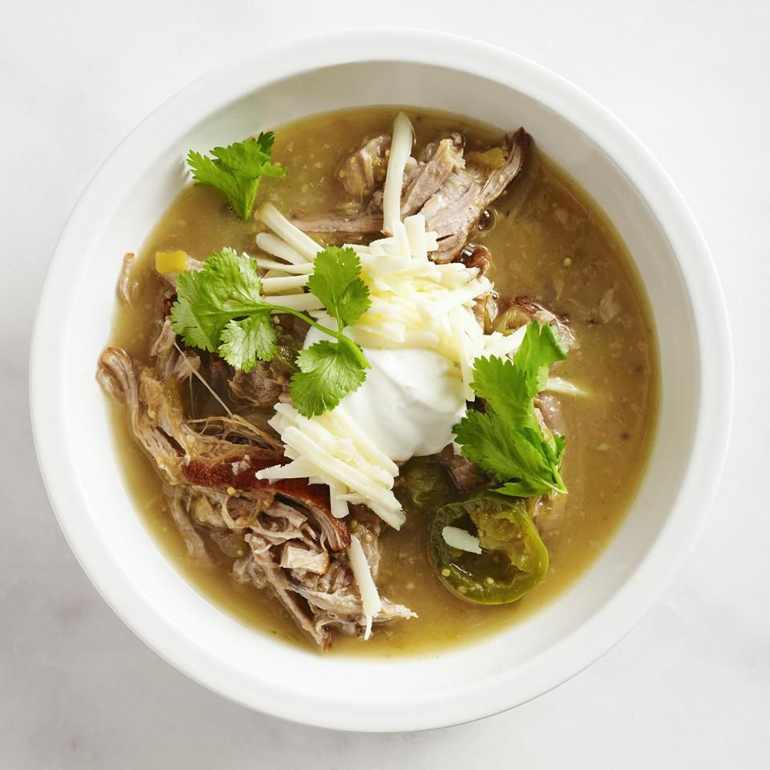

Slow Cooker Guisado Verde

Description
An easy tomatillo and pork stew.
Make it as spicy as you like by adding more or less jalapenos, or do not add any if you have a more tender palate.
553 Calories, 37g Fat, 18g Carbs, 37g Protein.
15 minutes to prep, 7 hours 15 minutes to cook, yields 4 servings.
Ingredients
- 2 tablespoons vegetable oil
- 2 pounds boneless pork shoulder
- 1 large onion, coarsely chopped
- 3 cloves garlic, chopped
- 2 (12 ounce) cans tomatillos, drained and chopped
- 1 (7 ounce) can diced green chile peppers
- 2 fresh jalapeno peppers, sliced
- 1/2 cup fresh chopped cilantro
- 1 teaspoon dried oregano
- Salt and pepper to taste
- 1 quart water
- 1 cup shredded Monterey Jack cheese
- 1/4 cup sour cream
- 4 sprigs fresh cilantro, for garnish
Steps
-
Heat the oil in a large skillet over medium heat, and brown the pork on all sides.
Reserving the juices in the skillet, transfer the pork to a slow cooker.
-
In the skillet with the pork juices over medium heat, saute the onion and garlic about 1 minute.
Transfer to the slow cooker, along with skillet juices.
-
Mix the tomatillos, green chile peppers, jalapeno peppers, and cilantro into the slow cooker.
Season with oregano, salt, and pepper. Pour in 1 quart water, or enough to cover all ingredients.
Cover, and cook on High for 6 to 7 hours.
-
Shred the cooked pork with a fork.
Spoon the slow cooker mixture into bowls, and top with Monterey Jack cheese, sour cream, and fresh cilantro sprigs to serve.